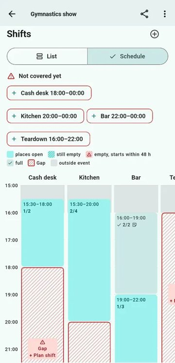

For clubs · iPhone & Android
Clubhand
Volunteer shifts, events and club life in one app. Organisers generate shifts in seconds, members sign themselves up, and outside helpers join via a link or QR poster — no app needed. Free for clubs with up to 30 members, data stored in Switzerland.